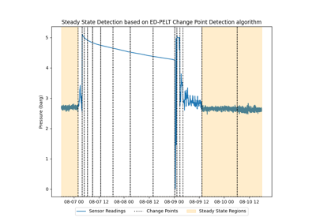

Detection Functions
Examples of how to use the detection functions included in Cognite Charts.


Oscillation detection using linear predictive coding
Oscillation detection using linear predictive coding

Steady State Detection: Change Point
Steady State Detection: Change Point
Unchanged signal identification of time series data
Unchanged signal identification of time series data